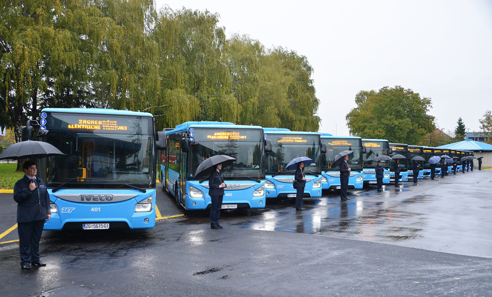
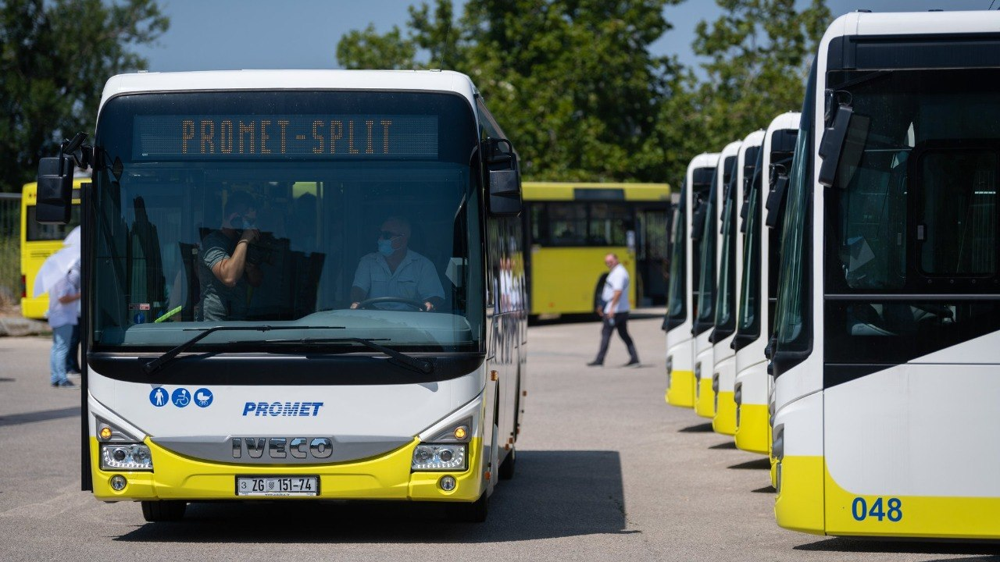
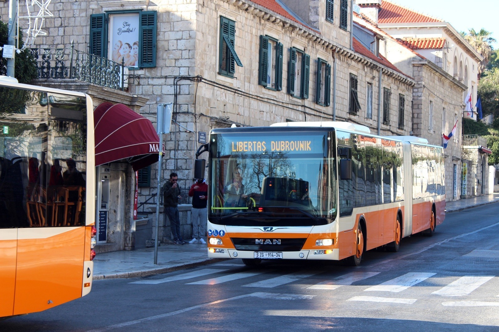
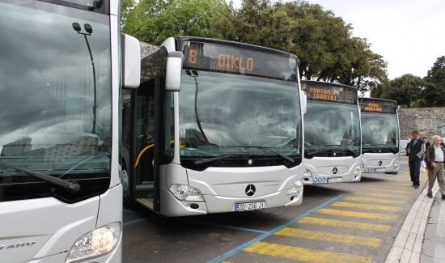
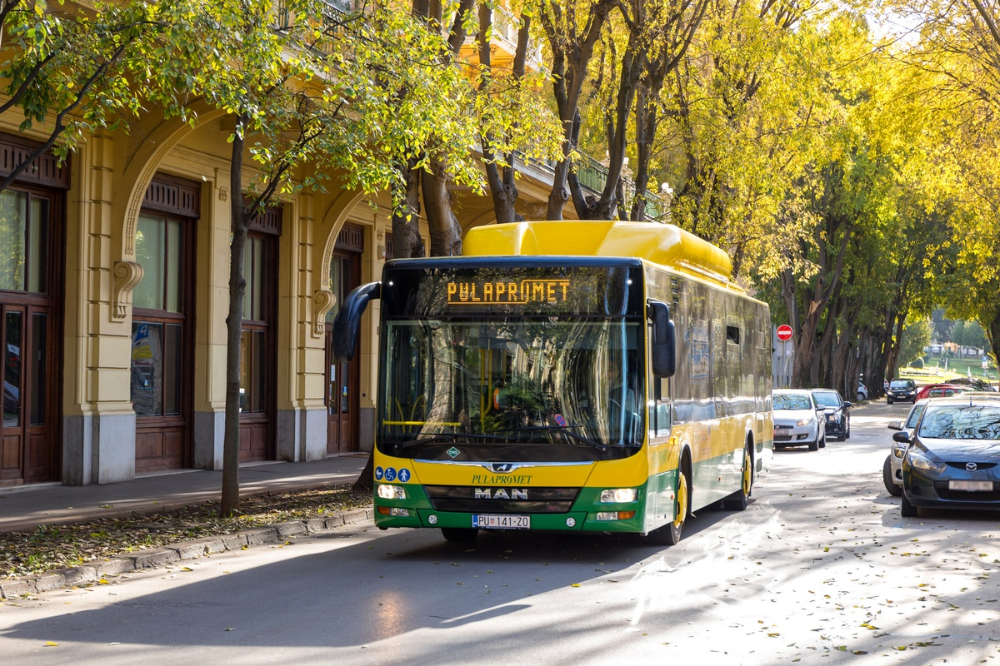
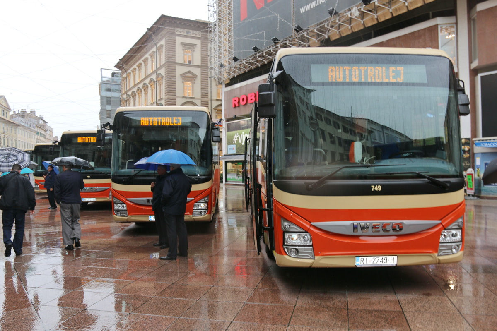
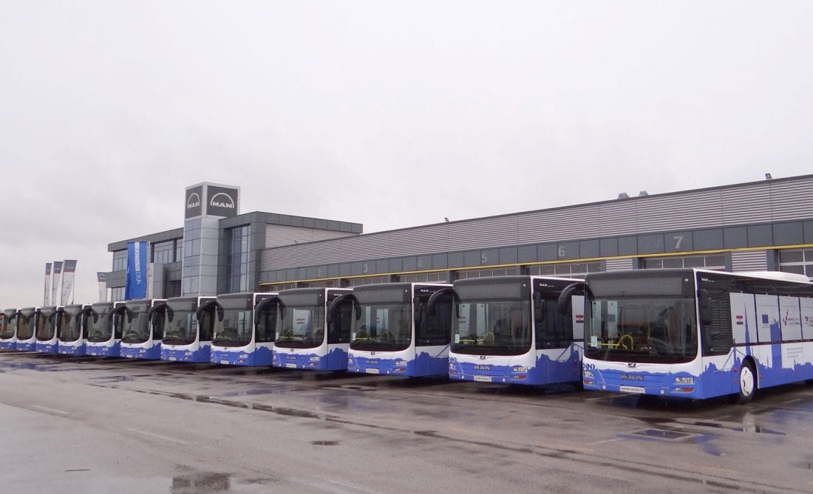

Pronađite informacije o transferima s aerodroma i lokalnim prijevoznicima u najvećim hrvatskim gradovima.

Zagreb - ZET
Zagrebački električni tramvaj (ZET) glavni je prijevoznik u glavnom gradu. Osim opsežne mreže tramvaja i autobusa, ZET upravlja i uspinjačom te žičarom Sljeme. Transfer od zračne luke do centra osigurava Pleso Prijevoz.
Učitavanje prijevoza...

Split - Promet Split
Promet Split povezuje sve dijelove grada te širu okolicu uključujući Trogir i Omiš. Iz zračne luke do splitskog kolodvora možete doći direktnim shuttle busom ili lokalnom linijom broj 37.
Učitavanje prijevoza...

Dubrovnik - Libertas
Libertas Dubrovnik osigurava moderan autobusni prijevoz unutar zidina i okolnih naselja. Transferi od zračne luke Čilipi do Starog grada (Pile) usklađeni su s dolascima zrakoplova.
Učitavanje prijevoza...

Zadar - Liburnija
Liburnija Zadar održava gradske i prigradske linije. Autobusni kolodvor u Zadru ključno je čvorište, a transferi do zračne luke Zemunik polaze s glavnog kolodvora i poluotoka.
Učitavanje prijevoza...

Pula - Pulapromet
Pulapromet povezuje centar Pule s turističkim naseljima poput Verudele i Pješčane Uvale. Shuttle bus povezuje zračnu luku Pula s glavnim autobusnim kolodvorom u centru grada.
Učitavanje prijevoza...

Rijeka - Autotrolej
Autotrolej Rijeka opslužuje grad Rijeku i okolicu (Opatija, Kastav). Zračna luka Rijeka nalazi se na otoku Krku, a transferi su organizirani u skladu s redom letenja.
Učitavanje prijevoza...

Osijek - GPP
GPP Osijek upravlja tramvajskim i autobusnim prometom u gradu na Dravi. Za transfere do zračne luke Klisa preporučuje se provjera polazaka shuttle servisa ili taxi službe.
Učitavanje prijevoza...